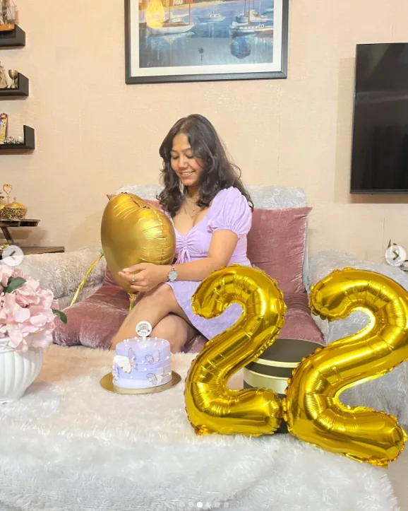

Pick the focal point first
Think about where guests will gather and where you want photos: the cake table, a clean wall, or the entrance. Choose one detail that makes that area feel special. A focal point can be number balloons, flowers, a banner, or a simple backdrop; it does not need to be all of them.
Use what already works
Look around the home or venue for a neutral table, a lamp, vases, trays, cushions, or fabric that can support the palette. Borrow stands and serving pieces if friends have them. Reusing pieces reduces cost and can make the setup feel more personal.
Save on the supporting details
- Choose two or three colors and repeat them in a few places.
- Use one tablecloth or runner instead of many small props.
- Print a simple sign or handwrite a small welcome note.
- Buy only the quantity needed for the planned areas.
- Skip decor that blocks conversation, walking paths, or the cake.
Spend where quality or safety matters
Stable stands, safe lighting, and a backdrop that stays in place matter more than extra decorative pieces. If you buy balloons or hanging items, plan safe weights and mounting. At a venue, confirm what can be attached to walls and ceilings before spending on installation supplies.
Before buying, ask
Will this item improve the focal area, make the room more comfortable, or help the celebration run smoothly? If not, leave it off the list.
Frequently asked questions
How many colors should I use?
Two or three colors are usually enough to make a small setup feel coordinated. Repeat them selectively rather than matching every object.
What is worth spending on?
Prioritize the item that creates the main visual focus or a practical safety need. Keep secondary details reusable or simple.
Further reading
These resources support the practical ideas in this guide. Open them for details that fit your venue and plans.
- Budget Birthday Party Ideas Under $100 — Explicitly compares budget decoration ideas and where to spend versus save.
- How to Throw a Party on a Budget — Recommends spending on a few hero details while saving on tableware and disposable supplies.
- How to Plan a Kids Birthday Party on a Budget — Covers low-cost food, cake, and decoration trade-offs.
- How to Throw a Birthday Party on a Budget — Practical ideas include dollar-store and DIY decor, and choosing what matters most.
- How to Plan a Birthday Celebration Without Overspending — Discusses spending limits and affordable decoration choices.
- How Do I Set a Party Budget and Decide Where to Spend It? — Explains how to prioritize supplies and use low-cost personal touches.
- 6 Steps: Birthday Party on a Budget — Gives examples of low-cost decor, photo area, food, and extras.
- How to Plan a Kids’ Birthday Party on a Budget — Gives a sample budget breakdown and cost-saving choices for decorations and favors.
- The Ultimate Birthday Party Budget Guide — Breaks down adult birthday costs and decor budget options.
- Birthday Party Budget Worksheet — A fixed-budget party exercise for deciding which elements to fund.
See the real moment on Instagram
This guide is inspired by Shanaya's 22nd birthday post. Follow @_itzzzshanaya for more lifestyle, fashion and dance moments, and to see what the next guide is about.

Open the birthday post on Instagram ↗Follow @_itzzzshanaya ↗ Open the birthday post ↗